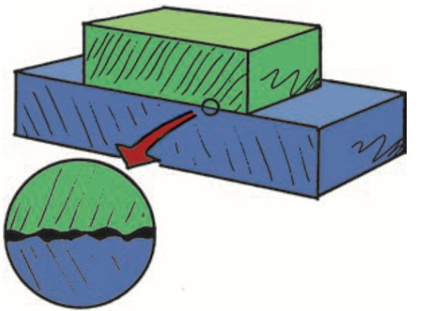
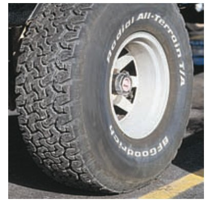

Friction
When surfaces slide or tend to slide over one another, a force of friction acts. When you apply a force to an object, friction usually reduces the net force and the resulting acceleration. Friction is caused by the irregularities in the surfaces in mutual contact, and it depends on the kinds of material and how much they are pressed together. Even surfaces that appear to be very smooth have microscopic irregularities that obstruct motion. Atoms cling together at many points of contact. When one object slides against another, it must either rise over the irregular bumps or else scrape atoms off. Either way requires force.

The direction of the friction force is always in the direction that opposes motion. An object sliding down an incline experiences friction directed up the incline; an object that slides to the right experiences friction toward the left. Thus, if an object is to move at constant velocity, a force equal to the opposing force of friction must be applied so that the two forces exactly cancel each other. The zero net force then results in zero acceleration and constant velocity.
No friction exists on a crate that sits at rest on a level floor. But, if you push the crate horizontally, you’ll disturb the contact surfaces and friction is produced. How much? If the crate is still at rest, then the friction that opposes motion is just enough to cancel your push. If you push horizontally with, say, 70 newtons, the friction builds up to become 70 newtons. If you push harder—say, 100 newtons—and the crate is on the verge of sliding, the friction between the crate and floor opposes your push with 100 newtons. If 100 newtons is the most the surfaces can muster, then, when you push a bit harder, the clinging gives way and the crate slides.1

Interestingly, the friction of sliding is somewhat less than the friction that builds up before sliding takes place. Physicists and engineers distinguish between static friction and sliding friction. For given surfaces, static friction is somewhat greater than sliding friction. If you push on a crate, it takes more force to get it going than to keep it sliding. Before the time of antilock brake systems, slamming on the brakes of a car was quite problematic. When tires lock, they slide, providing less friction than if they are made to roll to a stop. A rolling tire does not slide along the road surface, and the friction is static friction, with more grab than sliding friction. But once the tires start to slide, the friction force is reduced—not a good thing. An antilock brake system keeps the tires below the threshold of breaking loose into a slide.
It’s also interesting that the force of friction does not depend on speed. A car skidding at low speed has approximately the same friction as the same car skidding at high speed. If the friction force on a tire is 100 newtons at low speed, to a close approximation it is 100 newtons at a higher speed. The friction force may be greater when the tire is at rest and on the verge of sliding, but, once sliding, the friction force remains approximately the same.

More interesting still, friction does not depend on the area of contact. For a narrower tire the same weight is concentrated on a smaller area with no change in the amount of friction. So those extra wide tires you see on some cars provide no more friction than narrower tires. The wider tire simply spreads the weight of the car over more surface area to reduce heating and wear. Similarly, the friction between a truck and the ground is the same whether the truck has four tires or eighteen! More tires spread the load over more ground area and reduce the pressure per tire. The stopping distance when brakes are applied is not affected by the number of tires. But the wear that tires experience very much depends on the number of tires.
Friction is not restricted to solids sliding or tending to slide over one another. Friction occurs also in liquids and gases, both of which are called fluids (because they flow). Fluid friction occurs as an object pushes aside the fluid it is moving through. Have you ever attempted a 100-m dash through waist-deep water? The friction of fluids is appreciable, even at low speeds. So, unlike the friction between solid surfaces, fluid friction depends on speed. A very common form of fluid friction for something moving through air is air resistance, also called air drag. You usually aren’t aware of air resistance when walking or jogging, but you notice it at higher speeds when you ride a bicycle or ski downhill. Air resistance increases with increasing speed. The falling sack shown in Figure 4.4 will reach a constant velocity when the air resistance balances the force due to gravity on the sack.